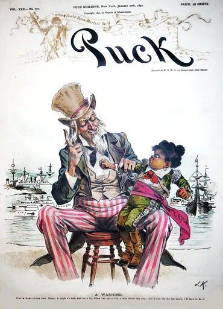
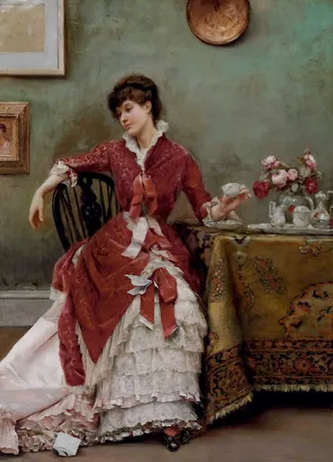
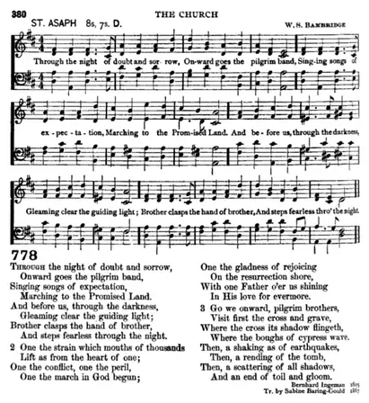
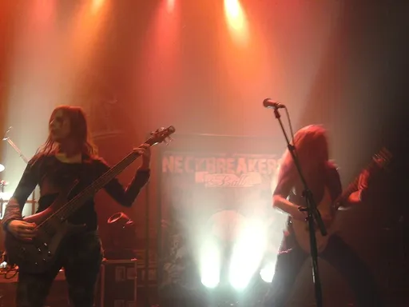
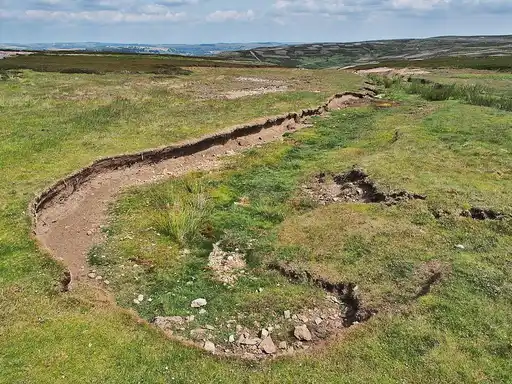
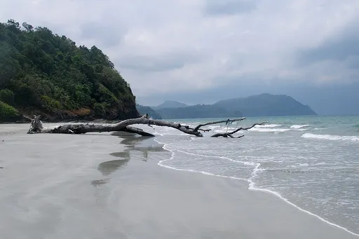
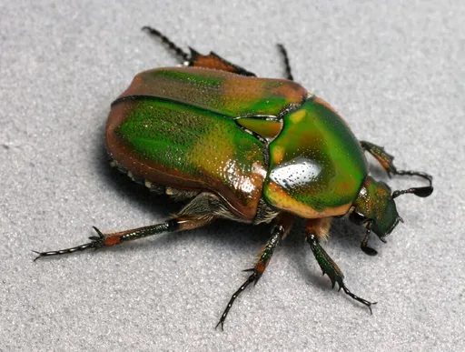
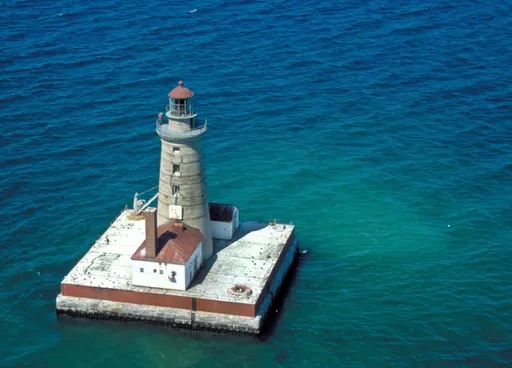
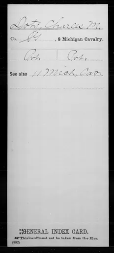

Reject an image by adding its slug to public/charades/charades-hard/reject.txt (append ! to keep it word-only), then re-run node scripts/genimages.mjs.

Diplomacy diplomacy Public Domain Mark · Sandy Qumbayah · source

Disappointment disappointment Public domain · Julius LeBlanc Stewart · sourceDizziness dizziness Public Domain Mark · polkbritton · source

Doubt doubt Public domain · Original lyrics in Danish as "Igjennem Nat og Traengsel" by w:Bernhardt S. Ingemann. English translation by w:Sabine Baring-Gould. Music by w:William S. Bambridge · source
Envy envy CC0 · This image is available from the National Library of Wales You can view this image in its original context on the NLW Catalogue · source

Equilibrium equilibrium CC BY-SA 3.0 · Kevin.B · source

Erosion erosion CC BY-SA 3.0 · Kreuzschnabel · source

Eternity eternity CC BY 4.0 · Vyacheslav Argenberg · source

Euphoria euphoria CC BY-SA 2.5 · Patrick Coin (Patrick Coin) · source

Evaporation evaporation CC BY 2.0 · NASA Goddard Photo and Video · source

Evolution evolution Public domain · War Department. The Adjutant General's Office. 3/4/1907-9/18/1947 · sourceExhaustion exhaustion CC BY 2.0 · Tom Reynolds from Melbourne, Australia · sourceFalling in love falling-in-love CC BY 2.0 · Till Krech from Berlin, Germany · source